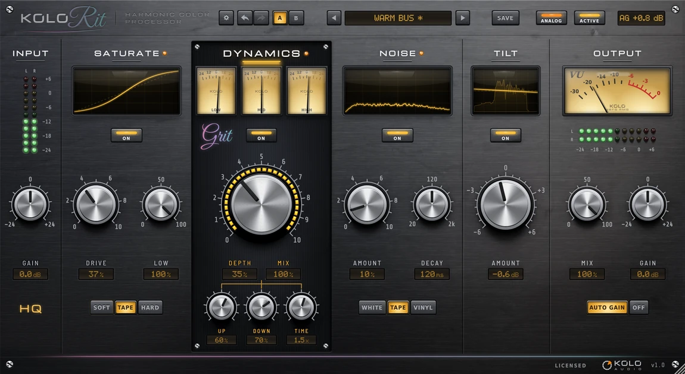
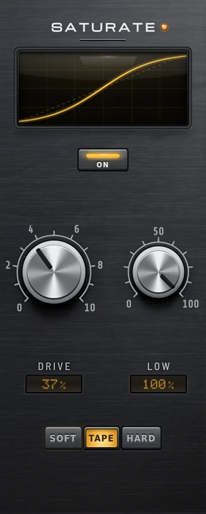
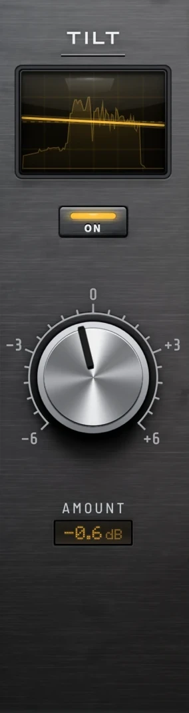

KOLORIT: Der einfache Weg, deinem Sound Farbe zu geben.

Erhältlich ab 15. Dezember.
Mails nur zum Launch und wenn AAX fertig ist. Abmelden jederzeit möglich. Datenschutz
Einführungspreis 49 € bis 12. Januar, danach 99 €.
Einführungspreis bis 12. Januar, danach 99 €.
VST3 für macOS und Windows, AU für macOS. AAX folgt bald.
Soundbeispiele
Gleicher Loop, gleicher Pegel. Umschalten, während er läuft.
- Drums0:15·
- Kick & Bass0:15·
- Synth0:15·
- Full Mix0:15·
Hier kommt die Farbe nach vorn. Drei fein abgestimmte Bänder heben leise Details an und halten die Peaks im Zaum, Upward und Downward zugleich.

Dabei holen sie die Obertöne hervor, die die Sättigung gerade erzeugt hat. So wird die Farbe satter und präsenter.
UP und DOWN bestimmen die Richtungen, TIME formt das Ansprechen, und der MIX-Ring mischt alles parallel bei.

Wärme und Fülle mit Soft, Glue und Gewicht mit Tape, Kante und Biss mit Hard. Jeden Typ gibt es sauber und als ANALOG-Version, zusammen sechs Charaktere. LOW hält den Sub straff, während der Bass an Präsenz gewinnt.

Noise, das sich mit deinem Signal bewegt. Es folgt jedem Hit des Originals und verstummt in den Pausen, so wird es nie zum Dauerrauschen. White, Tape und Vinyl, jeweils mit oder ohne ANALOG.

Heller oder wärmer mit einem Regler. Ein sauberer Tilt um 800 Hz, ohne Resonanzen und ohne eigene Färbung. Kippen Sättigung und Dynamik den Klang zu weit, holt Tilt ihn zurück.
- Grit
- Ein Klick auf den Grit-Schriftzug, und die Dynamik wird aggressiv: schnellere Detection, härteres Knee, Tails weit nach vorn geholt. Gemacht für Bässe, die knurren sollen, und Drums, die dicht werden sollen.
- Analog
- Die ganze Kette verhält sich wie Hardware. Links und rechts bekommen leicht unterschiedliche Bauteilwerte, die Dynamik bekommt ein programmabhängiges Release, und Tape bekommt einen Hauch Wow und Flutter. Bei Vinyl dreht sich eine virtuelle Platte mit 33⅓ U/min.
- HQ
- 4-fach-Oversampling für die Sättigung statt 2-fach. Die Höhen bleiben sauber und frei von Aliasing, auch wenn du den Drive weit aufdrehst. HQ wirkt live und im Export.
- Output Mix
- Der globale MIX in der Output-Sektion mischt die ganze bearbeitete Kette mit deinem Dry-Signal, latenz- und phasenrichtig.
- Workflow
- 82 Presets in 17 Kategorien, von Kicks und Bass bis zu Vocals, Bussen und ganzen Mixen. Zwei unabhängige A/B-Speicher für den schnellen Vergleich und 30 Undo-Schritte.
- Auto Gain
- Lauter klingt immer besser, und das macht ehrliche Entscheidungen schwer. Auto Gain misst die Lautheit wie ein LUFS-Meter und hält den Ausgang auf der Lautheit deines Originals, auch wenn du INPUT weit aufdrehst. So hörst du nur, wie sich die Farbe verändert. Soll KOLORIT Pegel dazugeben, schalte es aus.
Systemanforderungen
macOS
macOS 11 oder neuer, Apple Silicon und Intel
VST3 und AU
Windows
Windows 10 und 11, 64 Bit
VST3
AAX folgt bald. Benötigt eine DAW. Eine Lizenz läuft auf zwei Computern.